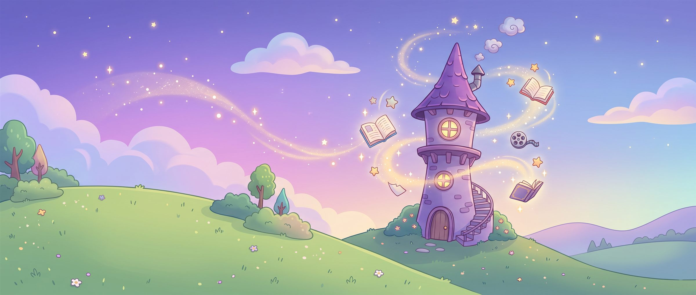

35 د
35 د 3,240
3,240ماذا تريد أن تصنع؟
تختار موضوعاً من المواضيع الجاهزة، وتصنع نور قصتك بالذكاء الاصطناعي. ما تصنعه يبقى خاصاً بك حتى ترسله للنشر.

اختر ما تريد، وتصنعه نور لك

أهلاً يا عمر! أنا نور. ماذا نصنع معاً اليوم؟
تختار موضوعاً من المواضيع الجاهزة، وتصنع نور قصتك بالذكاء الاصطناعي. ما تصنعه يبقى خاصاً بك حتى ترسله للنشر.